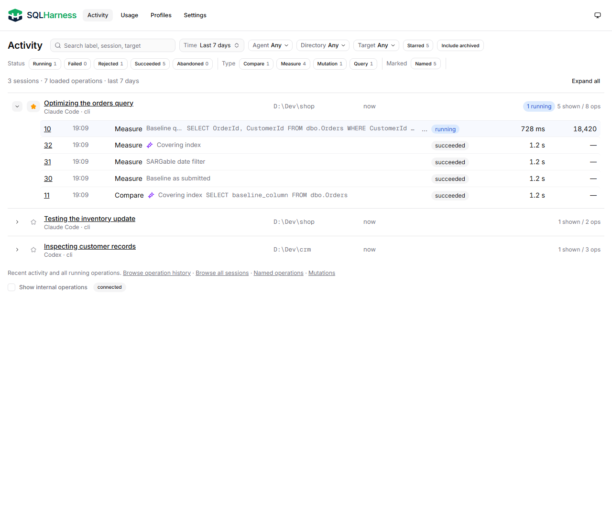
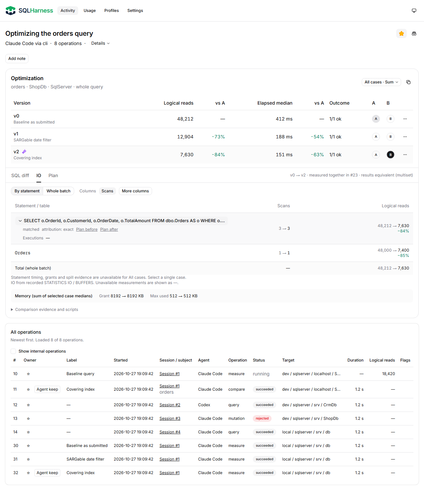
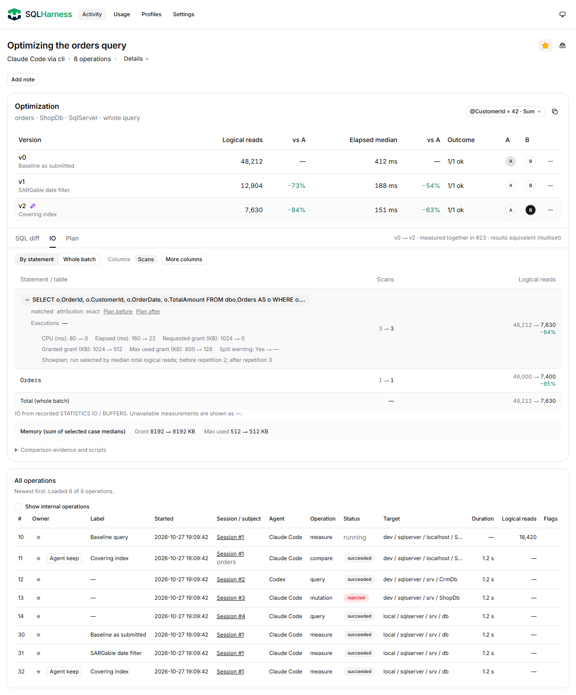
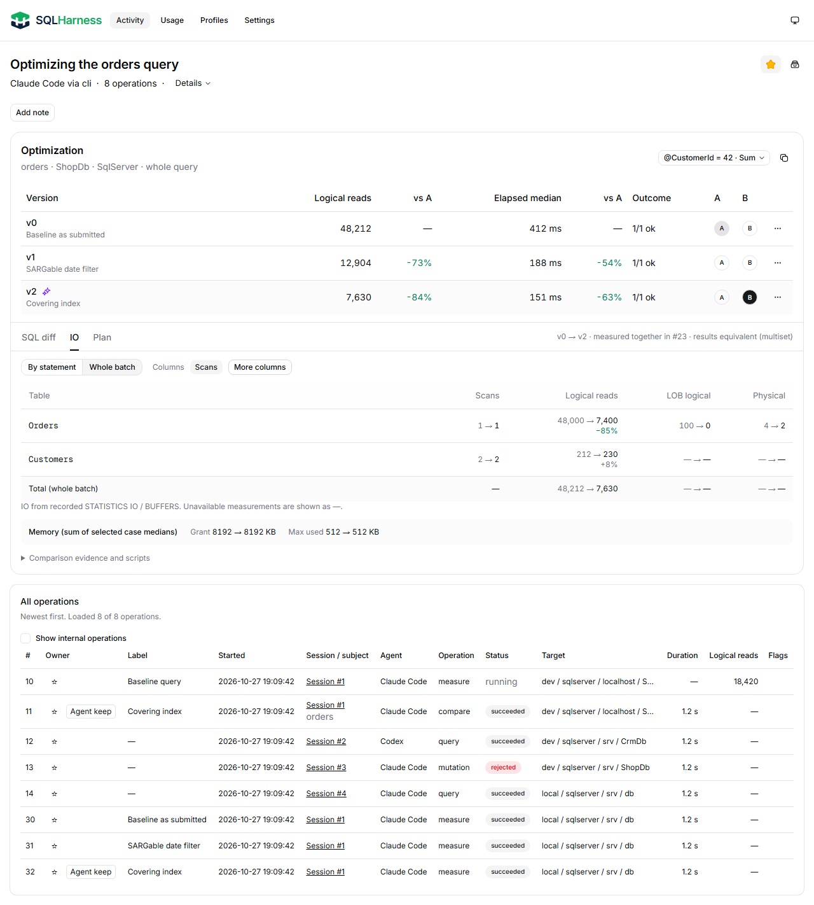
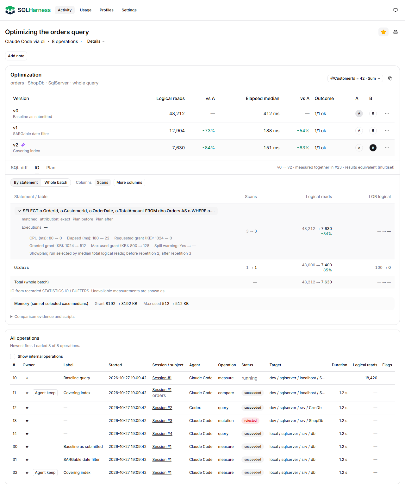
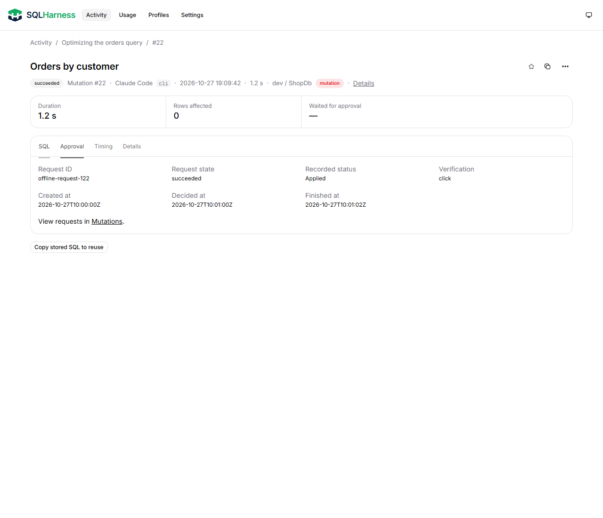
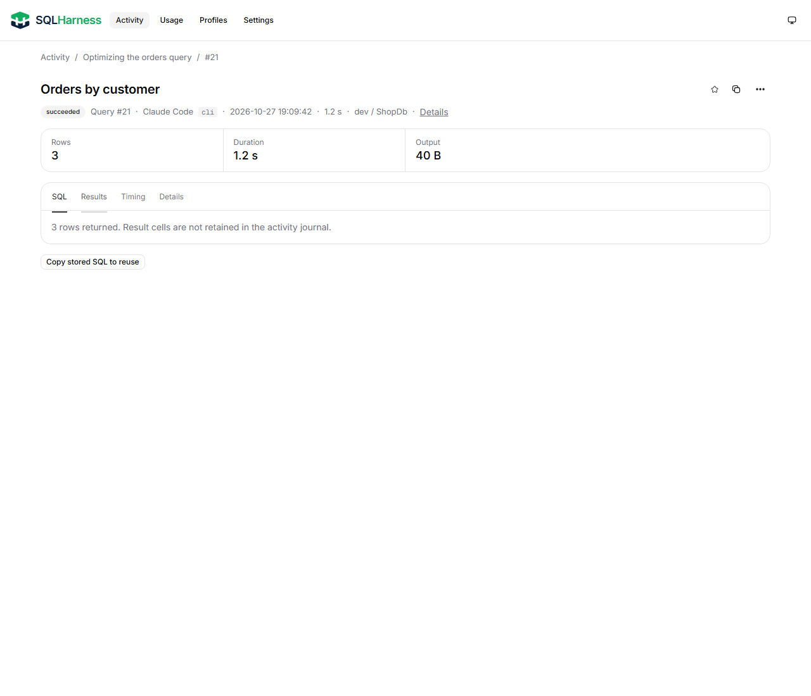
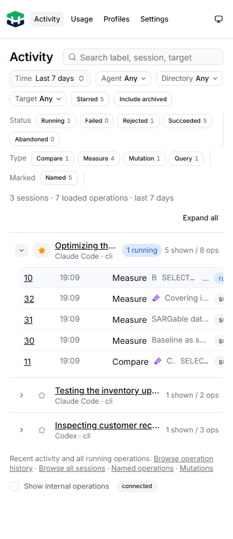
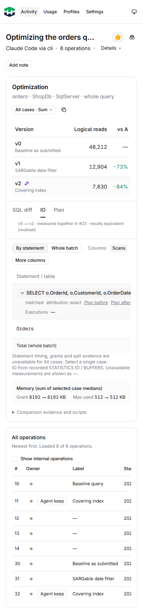
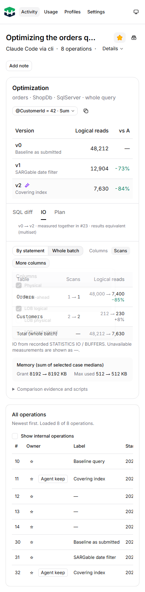
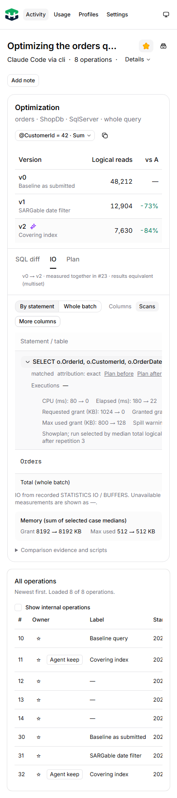
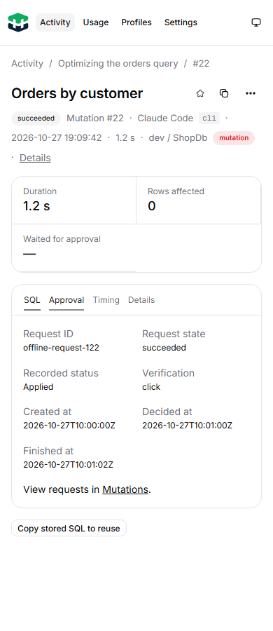
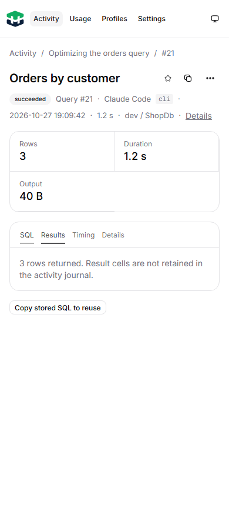
Actual built UI; synthetic intercepted API fixtures. No journal writes or target database connections. Desktop 1280px and mobile 390px; 14 states passed with no page errors or whole-page overflow. Local table scrolling remains allowed.












